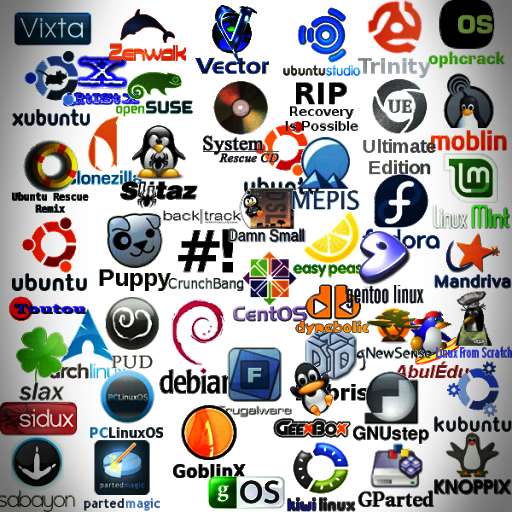

Kernel y Distribuciones GNU/Linux
Cristian Fabian Perea
(4/Diciembre/2021)
- En este pequeño apartado te hablare sobre el kernei de linux:
(Kern = núcleo, Hueso), Es un elemento importante del Sistema Operativo siendo la interfaz entre el hardware del computador y los procesos realizados por este, comunicándolos y gestionándolos de manera eficiente. Es un software que se almacena en la memoria y tiene permitido acceder al hardware sin restricciones., el usuario interactúa con él a través de la interfaz de llamadas al sistema (SCI). (¿Qué es el kernel de Linux?, 2021)
Es un clon de Unix escrito desde cero por Linus Torvals y se distribuye bajo la GNU General Public License v2. (Linux kernel release 5.x — The Linux Kernel documentation, 2021)
.png)
- En este pequeño apartado te hablare sobre las distribuciones linux, comunmente conocidas como distros:
(Distro = Distribución) Son sistemas operativos completos construidos sobre el núcleo Linux y basados en GNU o posteriores, podríamos decir son uç
na versión personalizada del Código original ampliado y/o modificado. Las distros son capas que van sobre el kernel (Linux) pero tienen su propia interfaz, herramientas y gestores de recursos (herramientas, Shell, display server, interfaz de usuario "GUI", GNU) (Juan Antonio Pascual, 2017)
